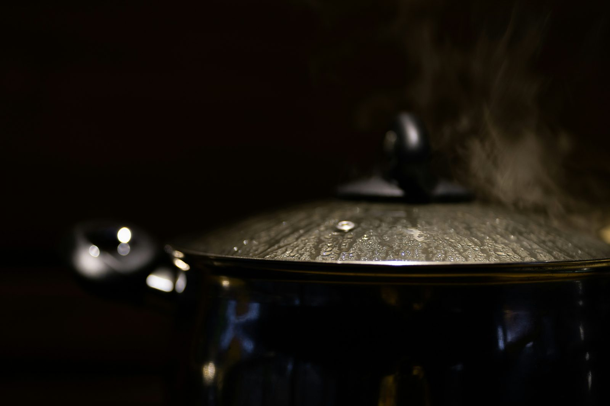

Cosa significa “cosa bolle in pentola”? Significa voler sapere cosa sta succedendo o se ci sono novità.
Questa espressione trae origine dalla cucina italiana, evocando l'immagine dell'acqua che bolle per la preparazione della pasta. Quando qualcuno chiede "cosa bolle in pentola", vuole essere aggiornato sugli avvenimenti recenti o su eventuali novità nella vita di chi sta interpellando. È un modo colloquiale per esprimere curiosità riguardo a ciò che sta accadendo in un determinato momento.
Da non confondere con la cucina reale! Questo modo di dire non si riferisce necessariamente alla cucina, ma viene usato per chiedere informazioni o aggiornamenti. È un’espressione metaforica che richiama l'attenzione su eventi imminenti o su ciò che si sta preparando, in senso figurato.
Cosa bolle in pentola? - Sinonimi e Contrari
Sinonimi
- Che succede?
- Che cosa si prepara?
- Quali sono i piani?
- Che novità ci sono?
Contrari
- Nessuna novità
- Situazione stabile
- Nulla di nuovo
- Calma piatta
Esercizio
1. Durante la riunione, il capo ha chiesto a tutti: "Cosa bolle in pentola per il prossimo progetto?"
Mostra Risposta
Appropriato: Sì, l'espressione è usata correttamente per chiedere aggiornamenti sul prossimo progetto.
2. Ho chiesto a mia sorella cosa bolle in pentola e mi ha raccontato delle sue nuove avventure lavorative.
Mostra Risposta
Appropriato: Sì, l'espressione è usata correttamente per chiedere delle novità nella vita di mia sorella.
3. Ho visto il pentolino sul fuoco e ho chiesto cosa bolle in pentola.
Mostra Risposta
Non appropriato: No, l'espressione è usata in modo troppo letterale, mentre il suo uso figurato è più comune.

This expression means wanting to know what is happening or if there are any updates. It originates from Italian cuisine, evoking the image of water boiling for pasta preparation. When someone asks "what's boiling in the pot," they are asking for updates on recent events or any news in the life of the person they are speaking to. It’s a colloquial way to express curiosity about what’s going on at that moment.
Not to be confused with literal cooking! This saying doesn’t necessarily refer to cooking but is used to ask for information or updates. It’s a metaphorical expression that draws attention to upcoming events or what’s being prepared, in a figurative sense.